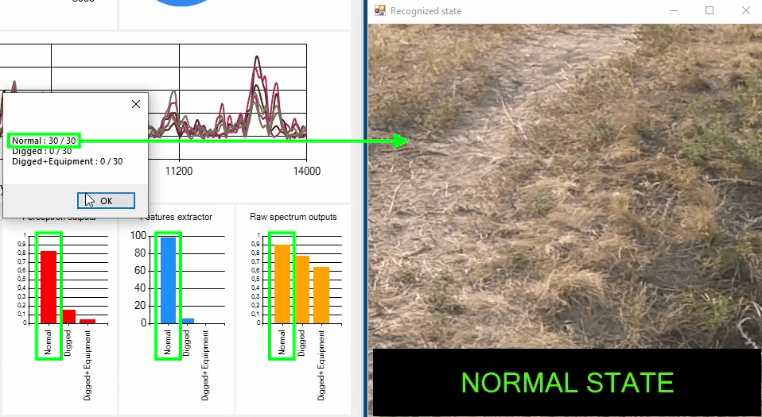

Прототип программно-аппаратного комплекса для распознавания состояния трубопровода анализом зондирующих акустических сигналов (по патенту на изобретение №2676386 с добавлением работы многослойного персептрона)
- Разработка является практическим результатом исследования возможности автоматического обнаружения и распознавания несанкционированных воздействий на нефте-, газо- и водопроводы посредством периодического воздействия на него упругими колебаниями, их регистрации и классификации
- Возможна адаптация под обнаружение изменений в функционировании различных агрегатов и распознавании предметов, устанавливаемых на чувствительную поверхность
- Одна из потенциальных областей применения - охранные комплексы, так как система реагирует на бесшумное прикосновение к контролируемому объекту и изменение его характеристик (поворот задвижки, изъятие элементов из системы и т.д.)
- Возбуждение и регистрация упругих колебаний в контролируемом объекте с помощью микроконтроллера, генератора импульсов, пьезоэлектрического акселерометра
- Передача накопленных сигналов от микроконтроллера в C# WinForms-приложение через USB -> COM-порт для тренировки БПФ-классификаторов и нейронной сети
- Обучение распознаванию заключается в формировании "эталонных" состояний контролируемого объекта посредством его зондирования импульсами упругих колебаний в штатном режиме с последующим внедрением имитаторов состояний
- Распознавание текущего состояния объекта в C#-приложении посредством непрерывного сравнения поступающих импульсов с известными классами сигналов
- Построение многослойного персептрона, его обучение и работа реализованы подключением моей небольшой DLL-библиотеки: github.com/alexfcoding/NeuralLibrary
- Обнаружение и распознавание состояния объекта оборудованием в связке с ПО на C# (USB -> COM-порт для связи)
- Обнаружение и распознавание объектов на чувствительной поверхности оборудованием в связке с ПО на C# (USB -> COM-порт для связи)
- Автономное обнаружение отклонения состояния объекта от нормы с помощью оборудования без подключения к ПК. Распознавание двух состояний: "Штатное"/"Отклонение"
- Программный режим: загрузка и анализ записанных WAV-файлов для исследования и классификации
- Микроконтроллер на Atmel SAM3X8E ARM Cortex-M3 (Arduino Due) для генерации сигнала, его регистрации с помощью АЦП, когерентного накопления, корреляции, отображения его формы на дисплее, а также передачи сигналов C# приложению для обработки через COM-порт
- Генераторы периодических импульсов (электромагнитный актуатор - работа в дальней зоне на дистанции более 300 м, электромагнитное реле - для демонстрационного стенда)
- Пьезоэлектрический акселерометр + усилитель сигнала
- Создание списка из любого количества состояний (распознаваемых классов) и сопоставление соответствующих изображений для индикации результата распознавания
- Прием накопленных импульсов от микроконтроллера через COM-порт или загрузка записей из WAV-файлов
- Повышение отношения сигнал/шум алгоритмом когерентного накопления импульсов
- Быстрое преобразование Фурье для сигналов. Построение амплитудного спектра текущего сигнала, его формы, доверительных интервалов
- Обучение нейронной сети на сигналах
- Обучение БПФ классификаторов
- Опция извлечения признаков состояний
- Распознавание состояний на основе решений от БПФ классификаторов и нейронной сети
- Вывод изображения распознанного состояния на экран

Акустическое распознавание состояния объекта на демонстрационном стенде
Акустическое распознавание класса объекта, устанавливаемого на чувствительную поверхность
Эксперимент по распознаванию несанкционированной деятельности на водопроводе (имитация создания шурфа, установки оборудования на трубу для врезки)

Распознавание сигналов тремя классификаторами
Описание
Принцип работы
Режимы работы
Аппаратная часть
Программная часть (C#)
Основные публикации по проекту
Способ обнаружения несанкционированных воздействий на трубопровод : пат. 2676386 Рос. Федерация - 2018
Способ обнаружения изменений параметров среды в окружении заглубленного магистрального продуктопровода : пат. 2463590 Рос. Федерация - 2012
Алгоритм обнаружения несанкционированных воздействий на трубопровод / журнал "Энергетик" (ВАК) - 2019
О вероятности ошибки обнаружения несанкционированных воздействий на трубопровод / журнал "Омский научный вестник" (ВАК) - 2019
Идентификация несанкционированных воздействий на трубопровод / журнал "Энергосбережение и водоподготовка" (ВАК) - 2018
О помехоустойчивости активного виброакустического способа / журнал "Омский научный вестник" (ВАК) - 2018
Амплитудно-частотный спектр виброакустического сигнала при ударном воздействии на трубопровод / журнал "Энергосбережение и водоподготовка" (ВАК) - 2018
Влияние факторов окружающей среды на распространение упругих колебаний в трубопроводе / журнал "Омский научный вестник" (ВАК) - 2018
Активный помехоустойчивый виброакустический способ контроля состояния магистрального трубопровода / диссертация - 2017
Активный помехоустойчивый виброакустический способ контроля состояния магистрального трубопровода / автореферат - 2017